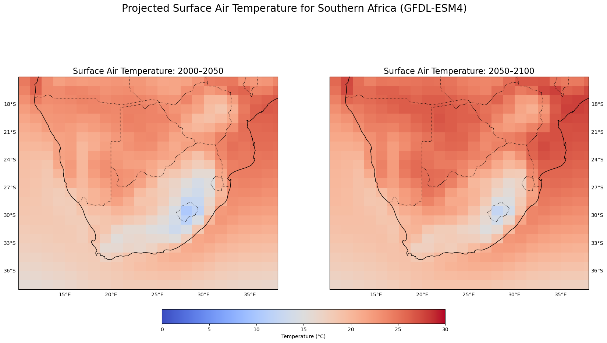
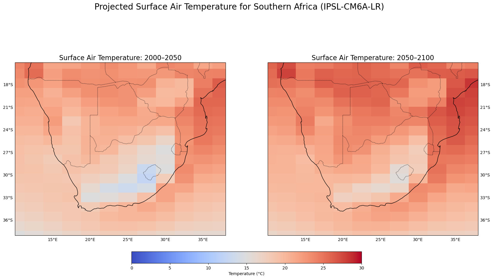
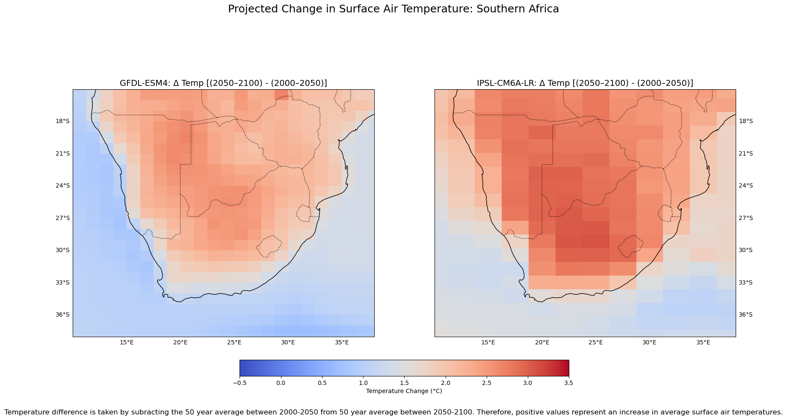

Show code
# load packages
import xarray as xr
import matplotlib.pyplot as plt
import intake
import s3fs
import numpy as np
import cartopy.crs as ccrs
import cartopy.feature as cfeature
import cftime
from cftime import DatetimeNoLeapMay 11, 2025
A workflow adapted from the Climate DataLab as part of EDS 296-1S (Advanced Special Topics in Environmental Data Science: A Climate Modeling Perspective on Big Data Techniques), a course offered at the Bren School of Environmental Science & Management.
This post walks through the process of accessing, processing, and visualizing large-scale climate data from Amazon Web Services (AWS) using Python in a Jupyter Lab environment. Focusing on Southern Africa, the analysis draws on two global climate models — GFDL-ESM4 and IPSL-CM6A-LR — to download and map historical simulations and future projections of air temperature. The workflow highlights geospatial data manipulation with xarray, rioxarray, and geopandas, including time averaging, model comparison, and visualization using matplotlib and cartopy. This post provides a practical introduction to open-source tools for regional climate analysis with cloud-hosted datasets.
Using the CMIP6 database hosted on Amazon Web Services, we will be downloading/using both historical simulations and future projections from two climate models (GFDL-ESM4 and IPSL-CM6A-LR) for ssp370.
Climate Models:
GFDL-ESM4 is the Geophysical Fluid Dynamics Laboratory (GFDL) Earth System Model version 4 (ESM4) climate model. It’s a coupled chemistry-carbon-climate Earth system model that was developed at the GFDL. As described by NOAA, GFDL-ESM4 consists of:
IPSL-CM6A-LR is the latest version of the Institut Pierre Simon Laplace (IPSL) climate model. It’s a physical atmosphere-land-ocean-sea ice model that also includes a representation of the carbon cycle, and it was developed at the IPSL to study natural climate variability and climate response to both anthropogenic and natural changes as part of CMIP6.
SSP Scenario:
ssp370 (also written as SSP3-RCP7.0) refers to the Shared Socioeconomic Pathway 3 combined with a radiative forcing level of 7.0 W/m² by the year 2100. It is considered a medium-to-high emissions scenario and commonly known as the “Regional Rivalry” pathway, characterized by high challenges to both mitigation and adaptation. A Carbon Brief article written by Zeke Hausfather describes SSP3 as the following:
We’ll be downloading surface air temperature (tas) data from the following two climate models:
GFDL-ESM4IPSL-CM6A-LRFor each climate model, we need:
ssp370Characteristics of these files (corresponding fields in the CMIP6 catalog are in parentheses):
The workflow used to download the data was guided by the Accessing CMIP6 Data via AWS tutorial.
# Specify search terms to query catalog for GFDL-ESM4 data
# activity_id: which project do you want? CMIP = historical data, ScenarioMIP = future projections
activity_ids = ['ScenarioMIP', 'CMIP']
# source_id: which model do you want?
source_id = ['GFDL-ESM4']
# experiment_id: what experimental configuration do you want? Here we want historical and ssp370
experiment_ids = ['historical', 'ssp370']
# member_id: which ensemble member do you want? Here we want r1i1p1f1
member_id = 'r1i1p1f1'
# table_id: which part of the Earth system and time resolution do you want? Here we want monthly atmosphere data
table_id = 'Amon'
# variable_id: which climate variable do you want? Here we want surface air temperature
variable_id = 'tas'# Search through catalog, store results in "res" variable
res_gfdl = CMIP6_catalog.search(activity_id=activity_ids, source_id=source_id, experiment_id=experiment_ids,
member_id=member_id, table_id=table_id, variable_id=variable_id)
# Display data frame associated with results
display(res_gfdl.df)
# Extract data for the historical period, store as a separate xarray Dataset
hist_data_gfdl = xr.open_zarr(res_gfdl.df['zstore'][1], storage_options={'anon': True})
# Extract data for each SSP
future_data_ssp370_gfdl = xr.open_zarr(res_gfdl.df['zstore'][0], storage_options={'anon': True})| activity_id | institution_id | source_id | experiment_id | member_id | table_id | variable_id | grid_label | zstore | dcpp_init_year | version | |
|---|---|---|---|---|---|---|---|---|---|---|---|
| 0 | ScenarioMIP | NOAA-GFDL | GFDL-ESM4 | ssp370 | r1i1p1f1 | Amon | tas | gr1 | s3://cmip6-pds/CMIP6/ScenarioMIP/NOAA-GFDL/GFD... | NaN | 20180701 |
| 1 | CMIP | NOAA-GFDL | GFDL-ESM4 | historical | r1i1p1f1 | Amon | tas | gr1 | s3://cmip6-pds/CMIP6/CMIP/NOAA-GFDL/GFDL-ESM4/... | NaN | 20190726 |
# Specify search terms to query catalog for IPSL-CM6A data
# activity_id: which project do you want? CMIP = historical data, ScenarioMIP = future projections
activity_ids = ['ScenarioMIP', 'CMIP']
# source_id: which model do you want?
source_id = ['IPSL-CM6A-LR']
# experiment_id: what experimental configuration do you want? Here we want historical and ssp370
experiment_ids = ['historical', 'ssp370']
# member_id: which ensemble member do you want? Here we want r1i1p1f1
member_id = 'r1i1p1f1'
# table_id: which part of the Earth system and time resolution do you want? Here we want monthly atmosphere data
table_id = 'Amon'
# variable_id: which climate variable do you want? Here we want surface air temperature
variable_id = 'tas'# Search through catalog, store results in "res" variable
res_ipsl = CMIP6_catalog.search(activity_id=activity_ids, source_id=source_id, experiment_id=experiment_ids,
member_id=member_id, table_id=table_id, variable_id=variable_id)
# Display data frame associated with results
display(res_ipsl.df)
# Extract data for the historical period, store as a separate xarray Dataset
hist_data_ipsl = xr.open_zarr(res_ipsl.df['zstore'][0], storage_options={'anon': True})
# Extract data for each SSP
future_data_ssp370_ipsl = xr.open_zarr(res_ipsl.df['zstore'][1], storage_options={'anon': True})| activity_id | institution_id | source_id | experiment_id | member_id | table_id | variable_id | grid_label | zstore | dcpp_init_year | version | |
|---|---|---|---|---|---|---|---|---|---|---|---|
| 0 | CMIP | IPSL | IPSL-CM6A-LR | historical | r1i1p1f1 | Amon | tas | gr | s3://cmip6-pds/CMIP6/CMIP/IPSL/IPSL-CM6A-LR/hi... | NaN | 20180803 |
| 1 | ScenarioMIP | IPSL | IPSL-CM6A-LR | ssp370 | r1i1p1f1 | Amon | tas | gr | s3://cmip6-pds/CMIP6/ScenarioMIP/IPSL/IPSL-CM6... | NaN | 20190119 |
The focus region for this analysis is Southern Africa. As it sounds, it’s the southernmost region of Africa. There are various definitions for the exact extent of this region, but we’ll be using the delineation of the United Nations geoscheme that includes Botswana, Eswatini, Lesotho, Namibia, and South Africa.
Southern Africa Climate:
Due to its size and varied geography, the greater Southern Africa region exhibits a wide range of climates. In general, this area is characterized by a subtropical to temperate climate, with significant variations in temperature and rainfall throughout the year. The northwest reaches of Southern Africa (namely western Namibia) exhibit desert conditions, the eastern coast can be classified as more subtropical, and the southwest (coastal reaches of South Africa) experience a Mediterranean climate. As mentioned above, average mean surface air temperature and precipitation vary significanly both throughout the region and annually. Southern areas throughout South Africa are cooler than the northern locations in Namibia and Botswana, with average mean surface air temperatures around 17 - 19 deg C and 22 - 24 deg C, respectively. Annually, temperatures fluctuate significantly with Nov - Mar being the hottest, and Apr - Oct the coldest. Southern areas of Southern Africa recieve less mean annual rainfall than northern areas of this region, and similarly to temperature trends, annual precipitation varies significantly with the vast majority of rainfall occuring in the wet season months (Nov - March), and little to no rainfall during the dry season (Apr - Oct).
Climate Change Impacts:
In a region that already experiences drastic fluctuations in temperature and precipitation throughout each year, I might expect these patterns to become even more pronounced under a changing climate. I would expect overall rainfall to decrease, with an increase in extreme precipitation events like atmospheric rivers. This would likely result in more frequent drying of river and stream networks, with and more frequent flooding events. Following global trends, I would expect average temperatures to also increase throughout the greater Southern Africa Region.
A reasonable lat/lon bounds for the Southern Africa Region is:
Information on Southern Africa’s climate was sourced from the Climate Change Knowledge Portal.
This analysis focuses on the following two time periods:
I chose these time periods to get a sense of climatic trends in a recent to mid century window, and mid to late century window to acquire a full picture of temperature trends in the Southern Africa region throughout this century.
First, we’ll concatenate the historical and SSP information into a single xarray object to make the plotting simpler:
It looks like the IPSL model data is already in a dtype of datetime64; however, we’ll need to change the format of the GFDL data to datetime64 to make plotting easier with Matplotlib
First, we need to examine the time formats of each climate model.
gfdl_data_ssp370 uses cftime.DatetimeNoLeap, which requires using that same calendar class. So, we need to use a different start and end date format that’s compatible for selecting specific time periods out of this object. The ipsl_data_ssp370 time coordinate uses standard numpy.datetime64, so we can slice it with normal strings like “2000-01-01” and don’t need cftime.
GFDL data# define the first time period
start_date1 = DatetimeNoLeap(2000, 1, 1)
end_date1 = DatetimeNoLeap(2050, 12, 31)
# define the second time period
start_date2 = DatetimeNoLeap(2050, 1, 1)
end_date2 = DatetimeNoLeap(2100, 12, 31)
# extract data for 2000-2050
temp_data_slice_gfdl_2000 = gfdl_data_ssp370.sel(
time=(gfdl_data_ssp370.time >= start_date1) &
(gfdl_data_ssp370.time <= end_date1)
)
# extract data for 2050-2100
temp_data_slice_gfdl_2050 = gfdl_data_ssp370.sel(
time=(gfdl_data_ssp370.time >= start_date2) &
(gfdl_data_ssp370.time <= end_date2)
)IPSL dataTake the time average of our filtered data for each climate model, and plot it for our specific region of interest (Southern Africa).
# Time average GFDL
temp_data_mn_gfdl_2000 = temp_data_slice_gfdl_2000.mean(dim=["time"])
temp_data_mn_gfdl_2050 = temp_data_slice_gfdl_2050.mean(dim=["time"])
# Time average IPSL
temp_data_mn_ipsl_2000 = temp_data_slice_ipsl_2000.mean(dim=["time"])
temp_data_mn_ipsl_2050 = temp_data_slice_ipsl_2050.mean(dim=["time"])GFDL-ESM4# Define PlateCarree projection
map_proj = ccrs.PlateCarree()
# Create figure with two subplots side by side
fig, axes = plt.subplots(nrows=1, ncols=2, figsize=(20, 10),
subplot_kw={"projection": map_proj})
# Shared settings
extent = [10, 38, -38, -15]
# Plot for 2000-2050
plot1 = axes[0].pcolormesh(
temp_data_mn_gfdl_2000.lon, temp_data_mn_gfdl_2000.lat,
temp_data_mn_gfdl_2000, transform=map_proj, cmap="coolwarm", vmin=0, vmax=30
)
axes[0].set_extent(extent, crs=map_proj)
axes[0].add_feature(cfeature.COASTLINE)
axes[0].add_feature(cfeature.BORDERS, linestyle=":")
gl1 = axes[0].gridlines(draw_labels=True, linestyle="--")
gl1.top_labels = False
gl1.right_labels = False
axes[0].set_title("Surface Air Temperature: 2000–2050", fontsize=16)
# Hide gridlines (make the lines transparent)
gl1.xlines = False
gl1.ylines = False
# Plot for 2050-2100
plot2 = axes[1].pcolormesh(
temp_data_mn_gfdl_2050.lon, temp_data_mn_gfdl_2050.lat,
temp_data_mn_gfdl_2050, transform=map_proj, cmap="coolwarm", vmin=0, vmax=30
)
axes[1].set_extent(extent, crs=map_proj)
axes[1].add_feature(cfeature.COASTLINE)
axes[1].add_feature(cfeature.BORDERS, linestyle=":")
gl2 = axes[1].gridlines(draw_labels=True, linestyle="--")
gl2.top_labels = False
gl2.left_labels = False
axes[1].set_title("Surface Air Temperature: 2050–2100", fontsize=16)
# Hide gridlines (make the lines transparent)
gl2.xlines = False
gl2.ylines = False
# Add shared colorbar
cbar = fig.colorbar(plot2, ax=axes[:], orientation='horizontal', fraction=0.05, pad=0.07)
cbar.set_label("Temperature (°C)")
# Add main title
fig.suptitle("Projected Surface Air Temperature for Southern Africa (GFDL-ESM4)", fontsize=20)
plt.show()
IPSL-CM6A-LR# Define PlateCarree projection
map_proj = ccrs.PlateCarree()
# Create figure with two subplots side by side
fig, axes = plt.subplots(nrows=1, ncols=2, figsize=(20, 10),
subplot_kw={"projection": map_proj})
# Shared settings
extent = [10, 38, -38, -15]
# Plot for 2000-2050
plot1 = axes[0].pcolormesh(
temp_data_mn_ipsl_2000.lon, temp_data_mn_ipsl_2000.lat,
temp_data_mn_ipsl_2000, transform=map_proj, cmap="coolwarm", vmin=0, vmax=30
)
axes[0].set_extent(extent, crs=map_proj)
axes[0].add_feature(cfeature.COASTLINE)
axes[0].add_feature(cfeature.BORDERS, linestyle=":")
gl1 = axes[0].gridlines(draw_labels=True, linestyle="--")
gl1.top_labels = False
gl1.right_labels = False
axes[0].set_title("Surface Air Temperature: 2000–2050", fontsize=16)
# Hide gridlines (make the lines transparent)
gl1.xlines = False
gl1.ylines = False
# Plot for 2050-2100
plot2 = axes[1].pcolormesh(
temp_data_mn_ipsl_2050.lon, temp_data_mn_ipsl_2050.lat,
temp_data_mn_ipsl_2050, transform=map_proj, cmap="coolwarm", vmin=0, vmax=30
)
axes[1].set_extent(extent, crs=map_proj)
axes[1].add_feature(cfeature.COASTLINE)
axes[1].add_feature(cfeature.BORDERS, linestyle=":")
gl2 = axes[1].gridlines(draw_labels=True, linestyle="--")
gl2.top_labels = False
gl2.left_labels = False
axes[1].set_title("Surface Air Temperature: 2050–2100", fontsize=16)
# Hide gridlines (make the lines transparent)
gl2.xlines = False
gl2.ylines = False
# Add shared colorbar
cbar = fig.colorbar(plot2, ax=axes[:], orientation='horizontal', fraction=0.05, pad=0.07)
cbar.set_label("Temperature (°C)")
# Add main title
fig.suptitle("Projected Surface Air Temperature for Southern Africa (IPSL-CM6A-LR)", fontsize=20)
plt.show()
Take the difference between each time period.
# Define PlateCarree projection
map_proj = ccrs.PlateCarree()
# Create a figure with two subplots side by side
fig, axes = plt.subplots(ncols=2, figsize=(20, 10),
subplot_kw={'projection': map_proj})
# Set common extent for both subplots (Southern Africa)
extent = [10, 38, -38, -15]
# --- Plot 1: GFDL-ESM4 ---
p1 = axes[0].pcolormesh(
gfdl_tas_diff.lon, gfdl_tas_diff.lat, gfdl_tas_diff,
transform=map_proj, cmap="coolwarm", vmin=-0.5, vmax=3.5
)
axes[0].set_extent(extent, crs=map_proj)
axes[0].add_feature(cfeature.COASTLINE)
axes[0].add_feature(cfeature.BORDERS, linestyle=":")
gl1 = axes[0].gridlines(draw_labels=True, linestyle="--")
gl1.top_labels = False
gl1.right_labels = False
gl1.xlines = False
gl1.ylines = False
axes[0].set_title("GFDL-ESM4: Δ Temp [(2050–2100) - (2000–2050)]", fontsize=14)
# --- Plot 2: IPSL-CM6A-LR ---
p2 = axes[1].pcolormesh(
ipsl_tas_diff.lon, ipsl_tas_diff.lat, ipsl_tas_diff,
transform=map_proj, cmap="coolwarm", vmin=-0.5, vmax=3.5
)
axes[1].set_extent(extent, crs=map_proj)
axes[1].add_feature(cfeature.COASTLINE)
axes[1].add_feature(cfeature.BORDERS, linestyle=":")
gl2 = axes[1].gridlines(draw_labels=True, linestyle="--")
gl2.top_labels = False
gl2.left_labels = False
gl2.xlines = False
gl2.ylines = False
axes[1].set_title("IPSL-CM6A-LR: Δ Temp [(2050–2100) - (2000–2050)]", fontsize=14)
# Add shared colorbar below the plots
cbar = fig.colorbar(p2, ax=axes[:], orientation='horizontal', fraction=0.05, pad=0.07)
cbar.set_label("Temperature Change (°C)")
# Add main title
fig.suptitle("Projected Change in Surface Air Temperature: Southern Africa", fontsize=18)
# Add a caption
fig.text(0.5, 0.02,
"Temperature difference is taken by subracting the 50 year average between 2000-2050 from 50 year average between 2050-2100. Therefore, positive values represent an increase in average surface air temperatures.",
ha='center', fontsize=12)
plt.show()
Results:
Looking at the first sets of plots that show the projected average surface air temperature in Southern Africa between time periods of 2000-2050 and 2050-2100, it’s evident that temperatures are projected to increase moving into the late century. This trend becomes more apparent when taking the difference between the average temperatures of each time period. We subtracted the earlier period from the later period; therefore, positive values represent an increase in projected average temperatures, and negative values represent a decrease. Looking at our difference plots above for each climate model, there’s a clear trend of increasing projected air temperatures. The IPSL-CM6A-LR climate model projects a more significant increase than the GFDL-ESM4 model.
Implications:
Rising average surface air temperatures across the greater Southern Africa region are likely to have widespread and compounding effects on both human populations and ecosystems. Higher temperatures can lead to increased evaporation rates and soil moisture loss, further stressing agricultural systems already vulnerable to climate variability. Crop failures may become more frequent, and livestock health may deteriorate as heat stress intensifies. Ecosystems throughout the region will also face mounting pressure, with species being forced to adapt, migrate, or face possible decline as thermal thresholds are exceeded. For human populations, prolonged exposure to extreme heat may worsen health outcomes, particularly for those with limited access to cooling infrastructure or healthcare. In urban areas, the intensification of the urban heat island effect could exacerbate social inequalities, while in rural areas, higher temperatures may further strain already limited water and food resources.
This assignment was created and organized by Sam Stevenson-Karl, an Associate Professor at the Bren School and the instructor for EDS 296-1S. EDS 296-1S (Advanced Special Topics in Environmental Data Science: A Climate Modeling Perspective on Big Data Techniques) is offered in the Master of Environmental Data Science (MEDS) program at the Bren School.
The workflow used to complete this analysis was adapted from the Climate DataLab, an open source resource for climate model education that’s supported by a growing community of educators, scientists, and developers working together to make climate data science more inclusive and effective.
@online{pepperdine2025,
author = {Pepperdine, Maxwell},
title = {From Clouds to Code: Mapping Big Climate Data with {Python}},
date = {2025-05-11},
url = {https://maxpepperdine.github.io/posts/2025-05-11-mapping-big-climate-data/},
langid = {en}
}